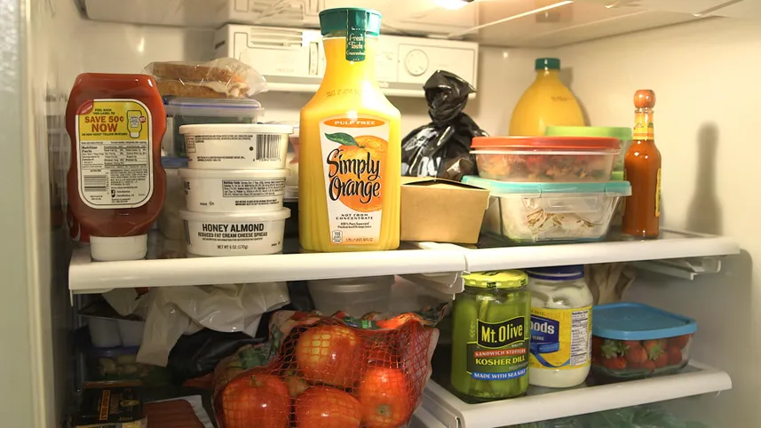
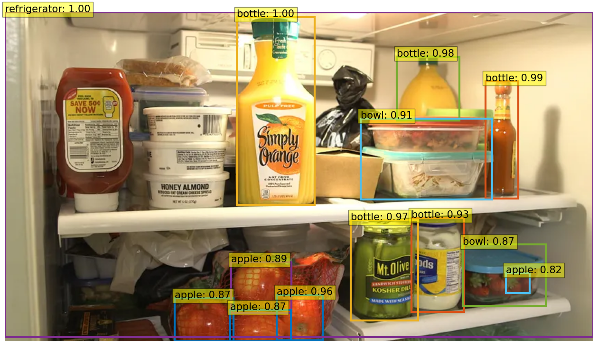
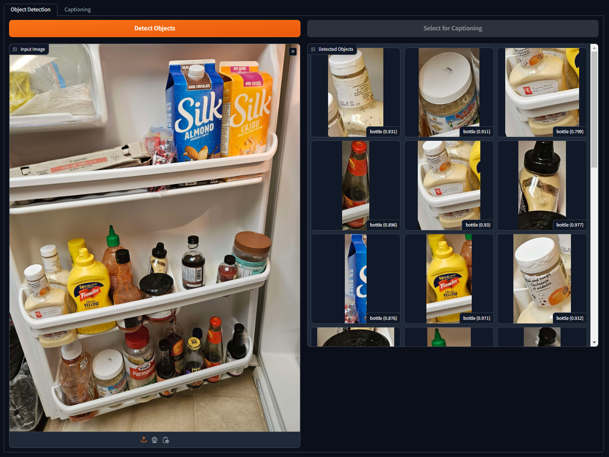
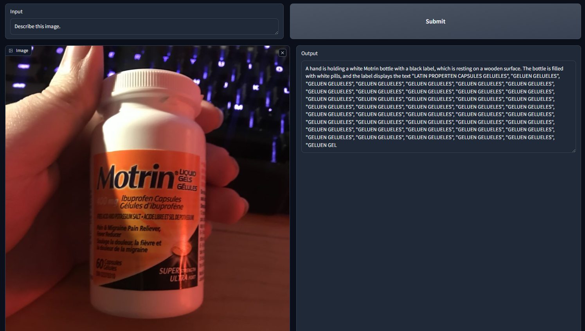

Food Identifier
Object detection and image captioning.
Introduction
The goal of this project is to create the foundation for an application that allows visually impaired people to identify food objects, such as those in refrigerators, by taking a photo of them and having the item described. According to this 2018 article from the Canadian Journal of Ophthalmology, 5.7% of Canadian adults had some form of visual impairment, so I firmly believe this is an area in which tools with this functionality can prove to be quite beneficial. In fact, this project was inspired by the grandmother of a friend of mine!
Use Case
This application revolves around people with visual impairments, especially the elderly, having difficulties reading labels on food items or even identifying them in the first place.
An ideal deployment would be through a mobile app in which the user uses their phone camera to snap a photo of a fridge or specific item they want to identify. The app then uses object detection to lock on to objects of interest, such as bottles, fruits, vegetables, etc., and passes that into the vision language model to properly caption.
The App
Here's a direct link to the project on Hugging Face.
Models
This project uses two models, one for initial object detection and another captioning the detected objects.
YOLOS: hustvl/yolos-small-300
- YOLOS' job is to find regions of the image that should have things worth captioning (such as bottles, produce, containers, etc.), then feed them to Moondream.
Moondream: vikhyatk/moondream2
- Moondream looks at an image (either from YOLOS or by user upload) and answers a question about it. The default question for this app is "What is this food item? Include any text on labels."
I landed on these models after quite some searching to find options that were both lightweight and accurate, allowing for the possibility of mobile device implementations.
I found Moondream first, and while smaller than other Image-Text-to-Text models like LLaVa-Next, I found it to work remarkably well on the test images I gave it! It took some time to learn the Hugging Face and Gradio environments, but I eventually found my stride and was able to implement Moondream with YOLOS following not far behind.
Implementation
You can follow the exact process of development through my commits to the Hugging Face repository for this project.
To summarize things:
- I started by looking into different frameworks to build the app with, settling on Gradio.
- After setting up the repository, I began implementing an initial version of Moondream, referencing parts of their example code.
- I changed that implementation to utilize threading, for better performance.
- With Moondream up and running, I started to implement YOLOS.
- I hooked YOLOS into Gradio's file upload system, which required some reconfiguration.
- I wanted the user to be able to choose any of the objects YOLOS detected, so I had YOLOS output to a Gradio image gallery.
- Finally, I linked the two systems together using a tab-based UI and tidied things up.
Testing
The models both work fairly well out of the box, with Moondream pulling ahead in the accuracy I observed during my development. However, the application would heavily benefit from fine-tuning, which I was unable to provide. I used the below image of a fridge (source) for a lot of my tests, as it had a variety of different food types and varying levels of occlusion.

I tried a few YOLOS variants but found a sweet spot with the Small-300 model. Here's what it detects in my test image with a threshold of 0.7:

While it does a good job, it clearly does not capture everything, and this is where I would have loved to fine-tune the model with more specialized training data if I had more time and computational resources. For the purposes of this proof-of-concept, however, I think it does well enough.
For another example, here's a photo of my friend's fridge and how it was parsed. It handles bottles extremely well, as likely that's one of the main labels the model is trained with, but it struggles with things like cartons.

Conclusion
The models are not perfect, that much is obvious. Moondream does not do well when trying to decipher small text, as I discovered through this fun bug:

The models themselves are not trained on data from a wide range of sources, providing some ethical concerns when it comes to recognizing foods from other cultures. This is something that could be alleviated with extensive fine-tuning, but it would still be nearly impossible to accommodate for everything. This is partially why I split the application into two halves instead of making it a single pipeline, as it allows users some additional manual control to caption individual items should the object detection not work correctly.
Additional challenges present themselves when it comes to the accuracy of Moondream, as it is not free from biases in their training data.
Looking forward, if I were to develop a mobile app based on this concept, I'd probably need to take another look at what models are available, given how frequently the field changes these days.